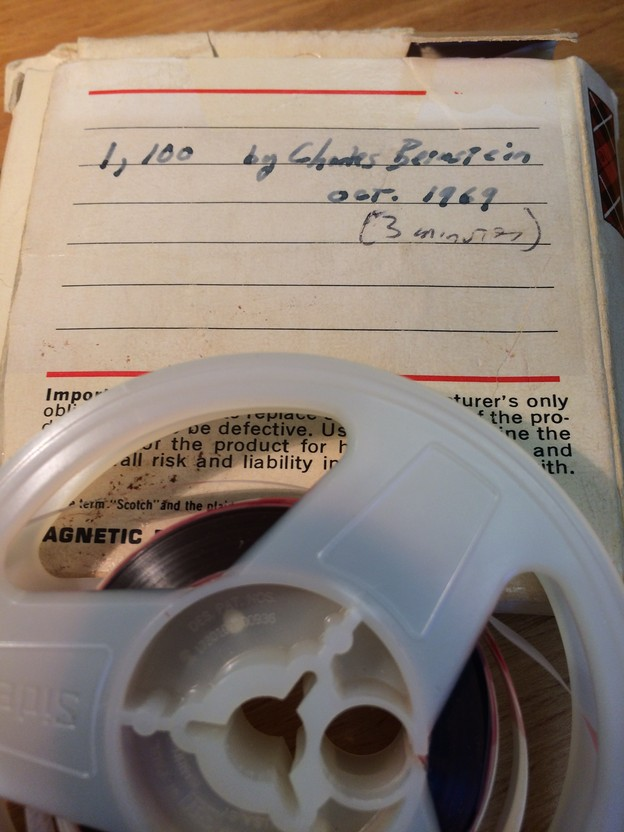
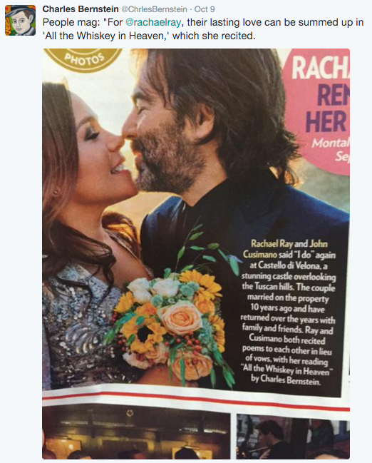

Listen to Charles Bernstein. His poetics is that of the oral, the performance, the pause, the saw (and accompanying sawteeth), and the recording. And it's fun. At least it's funner to listen to Charles Bernstein read than it is to read someone writing about Charles Bernstein. This is because there is a certain clarity that attends Bernstein's voice as he reads his poetry aloud. Close Listening - both the act and the long time radio production - redirects readerly attention from the text, and more specifically, from an obsession with semantics, intention, and authorship to a different modality: that of attending to voice, performance, and all of its accoutrements. But what exactly does "voice" encompass in this case and what is it we are listening for?
to this:
Bernstein gives a basic overview of some of things we might listen for when close listening to recorded or performed poetry in his essay "Hearing Voices" found in The Sound of Poetry / The Poetry of Sound, an anthology edited by Craig Dworkin and Marjorie Perloff (I highly reccomend purchasing this text). Here, Bernstein writes:
There are four features, or vocal gestures, that are available on tape but not on page that are of special significance for poetry: the cluster of rhythm and tempo (including word duration), the cluster of pitch and intonation (including amplitude), timbre, and accent. The first two of these features can be visually plotted with waveforms; the gestalt of these features contribrutes to tone. (142)
These features of the recorded voice and their effects for poetry, Bernstein contends, signify a change in the "ontological condition" of the poem (Bernstein 142). This is because all of the above mentioned features simply are not present in the text itself. However, in the recorded and performed poem, these are features are not only present, but are constituent pieces, and are essentail to any consideration of the recording and performance.
Bernstein notes that for the first two of these terms (referencing Reuven Tsur) the "rhythm" and "tempo" of a performed poem is not equivalent to the same poem's textual meter or prosody (145).Rather, the former terms are the manifestation - or remediation - of the latter's. And this remediation, like any remediation, transforms what is being transmitted. Therefore, the result is not just the text's prosody, but the transformation, or reinterpretation, or performance, or enactment &c. of this prosody into speech, which will be unique with each instantation, and with each voice speaking it.
Poetry readings proliferate versions of the poem, each version displacing but not replacing every other. (148)
The significance of this is to remember that both rhythm and tempo are not in the text of the poem, but they are in the performed and recorded poem. Hence the shift in the "ontological condition" of the poem (142). But, and this is maybe the most interesting (or at least most dialectical) part: Bernstein writes that because of the cluster or constellation of potential readings and performances a poem may take, the "implied or possible performance becomes a ghost of the textual composition"(145). That is to say, this ghosting, this type of hauntology as Derrida may deem it, inevitably feeds back into the actual writing process itself. That is to say: if I am going to perform a poem, I want to write it in the way I imagine I want to have it heard.
In terms of the third term, timbre, Bernstein writes that "timbre is both out of the immediate control of an author and the best picture we have of the poet's aesthetic signature and acoustic mark" (146). The analogy used later is visual - facial - in that one's timbre is equated to the "face" of the poet (146). We can think of this bodily metaphor as similar to Barthes' notion of the "grain of the voice", at least to the extent that the 'grain' is something akin to "the body in the voice as it sings" (188). However, it should be noted that Barthes emphatically also says "the 'grain' of the voice is not - or is not merely - its timbre" (image-music-text 185). So maybe I'm a bit off here. I think the relation is that both the grain of the voice and one's timbre are haptic sensations in any case: they are a unique resonance or characteristic, like the finger print of a voice, finely differentiated and knowable. Anyways, Bernstein laments that a discussion of timbre usually elicits only a cursory nod, but he himself does not elaborate much further than a paragraph on the subject here.
and then this:
Accent, the final of the four terms, is political. Accent speaks through "words scarred by their social origins and aspirations" (146). Accent speaks through social histories, geographies, temporalities, and is indelible: "performance is an open wound of accentual differences from which no poet escapes" (147). Although Bernstein says one can be held responsible to a degree in terms of how one reads, how one's timbre plays out, accent is, as quoted above, unescapable. Let me just overload you with quotes: "the modernist period represents a reaccentuation of English, but not by the English" (146).
This cursory overview of these four elements inevitably dumbs them down a bit, so I really suggest you just read the essay I linked to above. The point is mainly that poetry recordings and performances shift our frame of reference from readers to listeners, from close reading to close listening, and reoutfits us with different modes of intrepretation.
In regards to that first video, if we take Bernstein's jocular "What Makes A Poem a Poem" a bit more seriously, we can see that each of these four elements fit under this broad category of timing in some form or another. Of course, that's still a bit too broad to be definitively useful. Nonetheless, the poem recorded, digitized, and translated into bytes is a condensation of time and must still be experienced as durational. What we find is that undergoing this transformation it blossoms with newfangled expressive potentials.
atleast until ~16:00 to hear Bernstein perform the infamous 1, 100 .

This confabulating with Kenneth Goldsmith is just another introduction to the humour that haunts (the metaphor is not mixed) Bernstein's work. For there is both a humour and a haunting in Bernstein's work. Haunting, not just as in the paradoxical absence/presence of authorship as we listen and read, although this, not just in the often multilayered referentiality, further confounding 'who speaks?', although this, not just in knowing about bits and pieces of Bernstein's biography, although this, but also, actually, those three probably sum it up pretty good for now.
Some other humorous textual examples might also suffice: The poem Poem Loading... contains only the words: "please wait" (12). This poem aspires to the ludic pneuma that Tom Raworth imparts a number of his poems with: the most well-known being University Days which contains only the words: "this poem has been removed for further study" (Raworth, Collected Poems 136). Indeed, this poem by Raworth is indirectly referenced in a poem later in this collection. This is a tongue-in-cheek poetic. Indeed later, "Felix: / 'Nothing to bite / but my tongue.'" (82). To do so, tongue must touch cheek. But beyond just being tongue-in-cheek, the laugh can often be a type of biting humour. That is, the joke sinks its teeth in. Often double entendres double as poetic critique: "[s]chools are made to be broken" (10).
Perhaps as an aside, the poem most directly in conversation with Raworth's poem is found in Bernstein's All the Whiskey in Heaven, and is titled "This Poem Intentionally Left Blank", which, of course, it is (even the page number is removed) (245).
and then watch / listen to this while making dinner:
Bernstein's unpredictable, but frequent engagement with rhyme bolsters the claim by Susan Stewart's essay Rhyme and Freedom, also included in Marjorie Perloff and Craig Dworkin's The Sound of Poetry / The Poetry of Sound: "[g]iven the power of rhyme schemes of all kinds to lend particular semantic and visual weight to the place of unrhymed words, we might see the development of free verse as an unrhymed pause in the greater scheme of rhyme’s poetic history." (48)
Take for example, the envoi to Bernstein's collection All the Whiskey in Heaven which Bernstein recites here:
It is a beautiful poem and tribute to his daughter Emma Bee Bernstein. For more information on this, please follow the link to Henry Hill's Emma's Dilemma. Nor am I the first one to connect with this poem especially...

But listen to those slant rhymes, the 'er' of "Vermont" slips when we hear "Mars" and the 'mont' of "Vermont" is brought out by "basement" (297). To harken back to voice (isn't that a Don McKay line?) these slant rhymes are elaborated in this performance by Bernstein's timbre and accent. The rhythm and tempo emphasize these slant rhymes too. Others rhymes too are rough, but they appear, or at least, are heard as "diamonds" nonethless: "[S]ky" and "mind", and "then" and "again" are just such near misses that reinforce the double movement of this envoi which is a simultaneous recognition and farewell. As Catullus CI would have it: atque in perpetuum frater [soror] ave atque vale.
This particular example of rhyme is chosen for both its comedic and startling effects. There is a certain space opened in the form found between the standard ballad prosody and the quizzical yet evocative semantics that skirt between near cliche and something closer to 'originality'. "[P]earls" linking into "curls" is endearing and sentimental, if somewhat familiar subject matter, nonetheless, the nursery swing keeps the poem darling, light, and childlike. Especially when this follows things like interplanetary mobility "a million trips to Mars" and subterranean Hadean founts: "tears in the basement"
The thing for me is that I open almost any page of Recalculating and am inundated with things I want to mention. I haven't even really talked specifically about this collection here yet...
but luckily Al Filreis does a great job introducing it:
It is almost as if it is poetry that wants to be talked about. Its own incessant self-awareness of its aesthetic and poetic tendencies, formally, thematically, intertextually, engages us as readers on equally as many levels. Bernstein's penchant for innovation, as he speaks of in the "Task of Poetics" is generally a swerve away from existing modes of poetry into new territories. One effect of this departure perhaps is that every nuanced quality of a poem can be discussed precisely because the discourse to discuss already exists. Though of course, not every comment needs to be commented. I could, for example, cite at length numerous formal derivations and innovations worthy of mention, could trace intertextual resonances back through other works and other poets, or could discuss major recurring themes, but I think I'll let you do this yourself. For what it's worth, it's worth it.